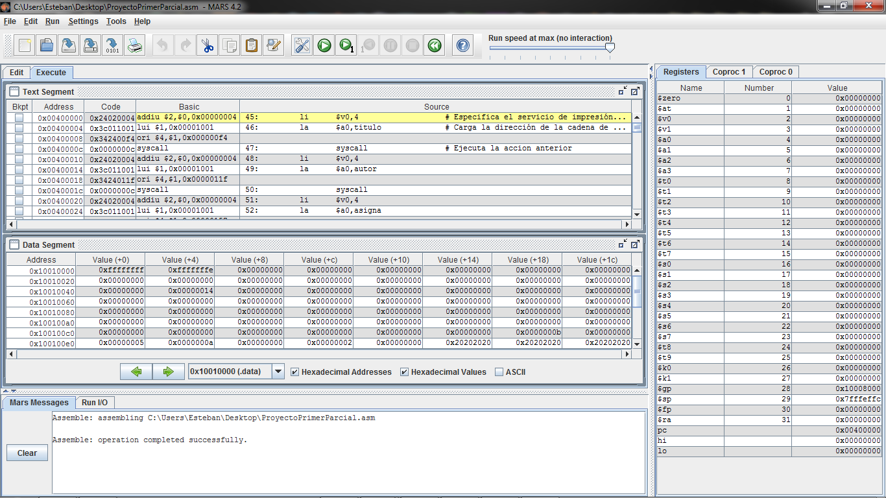
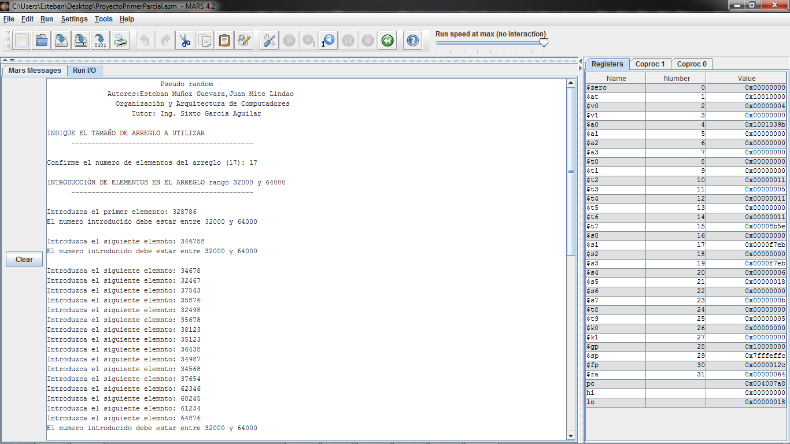
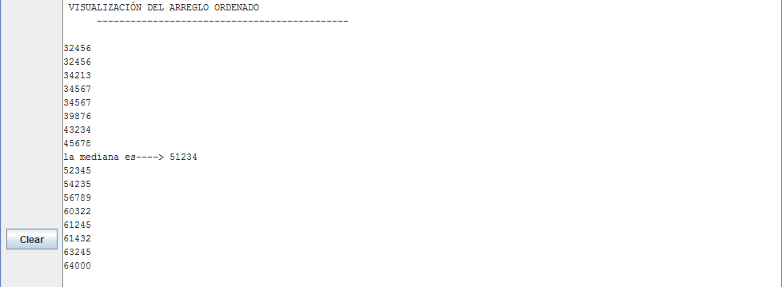

Manual de usuario
La imagen muestra el inicio del programa
A continuación se muestra un pequeño menú en el que presenta los integrantes del grupo y pide al usuario que ingrese el número de elementos que tendrá el arreglo, a continuación se presenta un pequeño mensaje que pregunta al usuario que ingrese un numero entre los valores indicados en el mismo , si por error el usuario se sale del rango e ingresa un numero erróneo se le vuelve a recalcar al usuario entre que rangos deben estar finalmente una vez ingresado los 17 elementos en el arreglo.Se visualiza en la consola dichos valores y se indica la mediana de la misma como se muestra en la imagen.
Se puede observar claramente los valores ordenados de forma acendente y se muestra la mediana del arreglo el cual nos permitira hacer la operacion and con la mediana y cada uno de los valores del arreglo ordenado.